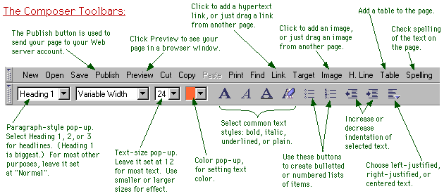
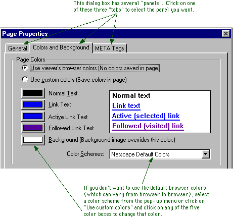

Labs for The Most Complex Machine
Web Publishing Lab:
Creating Web Pages with Netscape Composer
THIS LAB IS A BREAK FROM THE USUAL run of Java applets and exercises. You've used Web pages in the previous labs. In this lab, you'll learn something about how Web pages are created, and you will publish a page of your own on the Web.
Note: Parts of this lab are specific to students in CPSC 100, Fall 1997, at Hobart and William Smith Colleges. The entire lab assumes that you are working with Netscape Communicator, version 4.0 (or, presumably, later), which includes a component called Netscape Composer for creating Web pages. The use of HTML in email, as described in the last section of the lab, is possible in Netscape Communicator for Windows but might not be available in versions of Netscape that run on other platforms. Other details will be different on other platforms as well.
The only exercise for this lab is to produce a Web page. Your page should include headlines, lists, links, colors, graphics, and at least one table. You might want to create a personal home page with information about yourself. You might make a page with information on some selected topic. Or you might want to be more creative: maybe a work of Web-based art?
The lab includes the following sections:
- What is HTML?
- Netscape Configuration
- Making Your First Page
- Publishing Your Page
- Adding Some Frills
- HTML Email
What is HTML?
The pages that are displayed by a Web browser program such as Netscape are written in a special language called HTML, or HyperText Markup Language. (The word hypertext refers to documents that can contain links to other documents; the use of such links is the most distinctive feature of HTML and of the Web.) An HTML document is a plain text file. It contains the text that you see on the page, along with special commands called tags that tell the browser how to display the text and what else to put on the page besides text. For example, text can be displayed in bold face by enclosing it between the tags <b> and </b>. If you want the words "This is important" to appear in bold face on the page, like this:
This is important
then you would put
<b>This is important</b>
into your HTML document. Similarly, a link to David Eck's home page, which has a URL of http://math.hws.edu/eck/, could appear in an HTML document as
<a href="http://math.hws.edu/eck/">Eck's Home Page</a>
and this would appear in a Web browser as the link
You can see the HTML source code for any Web page. Most Web browsers have a command that will display the HTML source of the page that you are currently viewing. In Netscape, you can use the "Page Source" command under the "View" menu. Try this command now, to see the source for this page!
HTML started out a few years ago as a relatively simple and easy-to-use language. As time has gone by and as newer versions of HTML have been introduced, it has become much more cluttered and complicated. This has made it possible to produce fancier Web pages, but it has made it more difficult for ordinary people to produce state-of-the-art pages just by typing in a few HTML commands. Fortunately, however, it has become possible for people to produce Web pages without knowing any HTML at all! Programs have been written that allow you to create Web pages in a WYSIWYG ("What You See Is What You Get") environment. These programs are very similar to word-processing programs, and in fact you will find that many word-processors now include HTML authoring capabilities.
Netscape Communicator 4.0 includes an HTML authoring component called "Composer." With Composer, you can create Web pages without ever seeing any HTML codes. They will still be there in the background, of course, and you can use the "View Page Source" command to see them if you want. Composer is not a complete tool for HTML authoring -- it does not give you access to many of HTML's advanced features. However, it is likely to be perfectly adequate for most people's needs, and it is a good place for anyone to start.
Netscape Configuration
You can use Composer to create a Web page, and you can view that page on your own computer. However, in that case, you'll be the only one in the world who can see it. Suppose you want to publish your page, so that it can be seen by any of the tens of millions of uses of the Web? In that case, you have to place your page on a Web server -- a computer that is connected to the Internet and that is running a program that lets it "serve" Web pages to other computers on the Net. If your computer is permanently connected to the Internet, you might be able to run your own personal Web server. Otherwise, you can still hope to find a friendly Web server where you can locate your pages.
For students at Hobart and William Smith Colleges, there are several Web servers where you can publish your Web pages. The official Web pages of the Colleges are on a server called www.hws.edu. If you want to be serious about maintaining a presence on the Web, you should get an account on this server and publish your Web pages there. (See the Computer Services page for information.) You can also set up Web pages in your email account on the campus VAX, hws3.hws.edu. (I am not going to have you use this account for this lab -- as I would have liked -- because I can't get Netscape Composer to work properly with the VAX's somewhat out-of-fashion VMS operating system.)
However, for this lab, I have set up a special account for you to use on one of the computers belonging to the Department of Mathematics and Computer Science. The name of the machine is escher.hws.edu. Your account on this machine will be deleted at the end of the Fall term, so if you want to keep your Web pages around, please talk to me about moving them to another machine before the end of the term.
You will have to configure Netscape Composer so that it knows about this account. To do this, choose the "Preferences" command from the "Edit" menu. A dialog box will appear. From the list on the left edge of this dialog box, choose the item "Publish," which is listed under "Composer." (You might have to click on a small plus sign or triangle next to the word "Composer" in order to see "Publish.") In the Publish dialog box, make sure that the two boxes under "Links and Images" are checked. Then, fill in the following information under "Default Publishing Information", substituting your own username for "username":
Publish to (FTP or HTTP): ftp://username@escher.hws.edu/export/home/username/www/
Browse to (HTTP): http://escher.hws.edu/~username/
Then click the OK button. This will allow Netscape Composer to find your account on escher.hws.edu, so that it can "upload" your pages into that account. You will need the password for the account later, when you have a page ready to go.
Note: Netscape Communicator includes an on-line help facility that has lots of information about Composer and HTML, as well as about all of Communicator's other features. To access this information, choose "Help Contents" from the "Help" menu. To get information about Composer in particular, select the link to "Creating and Editing Web Pages" in the help window that appears.
Making Your First Page
There are several ways to start up Netscape Composer:
- From Netscape's "File" menu, select the "New" submenu, and then select "Blank Page";
- Click on the small Composer icon in the bottom right corner of a Netscape browser window;
- Select "Page Composer" from the Netscape menu.
Use any one of these methods to open a window where you can create your page. There will be a large area where you can type your page and several toolbars along the top of the window. One toolbar is used to set the style of the text you type. You can have italic text, big text, colored text, centered text, and so on. The other toolbar is used to add HTML features such as graphics, links, and tables to the page. (The toolbar commands are also available in "Insert" and "Format" menus, in case you prefer using menus.)

I suggest that you start by typing some text for your page. Start with a headline for the page, on a line by itself. Press return a couple of times, and type in a paragraph or two of introductory text. (As with a word-processor, you should press return only at the end of a paragraph; lines within a paragraph will be wrapped automatically to fit in the window where the page is displayed.) Once you've gotten some text on the page, you can go back and add formatting.
First of all, you should try changing the color of the text and of the page background. To do this, you need to access a "Page Properties" dialog box. Click on the page with the right mouse button. A pop-up menu will appear. Choose "Page Properties" from the pop-up menu. (Note that on a Macintosh, you can click-and-hold the mouse button to get the same pop-up menu.) This dialog box has several panels. You should be looking at a panel called "Colors and Background".

Each page has five associated colors: one for the page background, one for regular text, and three different colors that are used to display links. You can select the colors for your page from the "Color Scheme" pop-up menu. (Alternatively, you can set each color individually.)
Now, make some changes to the text. If you have a page heading on the first line of text, hilite it, and then select "Heading 1" from the pop-up menu at the left end of the toolbar. Center the heading by selecting centered text from the pop-up menu at the right end. You might also use the color pop-up menu in the toolbar to change the color of the heading. You can make similar changes to any text on your page.
Dividing lines can help to organize a page. Add one to your page by clicking on the "H. Line" button. Once the line appears on your page, you can drag its edges to change its size, and you can right-click on it to get a pop-up dialog with various options.
To make a hypertext link on your page, use the "Link" button in the toolbar. You will get a dialog box where you can type in the URL of the page to which you want to link. You can also enter the text of the link that you want to appear on the page. (Alternatively, you could hilite the link text before clicking the Link button.) Remember that an easy way to get the URL for a page is to go to that page in the Netscape browser and then Cut-and-Paste the URL from the Location box at the top of the browser window. Once the link is created on the page, you can right-click on it to get a pop-up dialog with various options.
You should play with the basic tools mentioned in this section until you get your page into reasonable shape. As a final step, you will probably want to run a spell-checker on your page by clicking on the "Spelling" button in the toolbar. You will then be ready to publish your page.
Publishing Your Page
To publish a page that you have created in Netscape Composer, click on the "Publish" button in the toolbar. This will bring up a dialog box that looks something like this:

The Location and Username should already be filled in with the configuration information that you entered earlier. You can fill in the password for your account, or you can leave it blank. If you leave it blank, Netscape will ask you for it later. If you are working with a newly created page, then the Page Title and HTML Filename boxes will be blank. You should fill in these two boxes. Ordinarily, the HTML Filename for your "home page" should be index.html. The Page Title can be anything you want -- this is the title that will appear in the title bar of a browser window when the page is viewed.
Once you have set up all this information, click the OK button, and Netscape will attempt to send your page to the Web server. If it succeeds, you will be able to view the page in a regular browser window (and so will anyone else on the Internet who knows its URL).
Once your page has been published, you can continue to make changes in the Composer window. For those changes to take effect, you will have to have to upload the page again by clicking on the Publish button.
If you want to return to edit your Web page at a later time, all you have to do is start up Netscape again, load your page into the browser window, and then choose "Edit Page" from the "File" menu. This will open a Composer window that you can use to edit the page and publish the new version. (In fact, you can do this with any Web page that you would like to use as a starting point for a page of your own.)
Adding Some Frills
After you get the hang of using Composer, you will want to try out some other HTML features. You will certainly want to add some graphics images to your page. This is very easy to do in Composer, since you can drag images from another page into the page you are creating. I've made a page of sample images that you can use. You can get images from any page in the same way (although you should, of course, try to be careful about copyright issues). You can also drag images from one place to another on the page you are creating.
When you drag an image into your Web page, it will appear wherever the blinking cursor is currently located. Web browsers treat images much like big characters, and you can have an image in the middle of a paragraph. You can even include an image in a link; someone viewing the page will be able to follow the link by clicking on the image. There are several options for image placement and other image properties. To see a dialog box containing these options, just click on the image with the right mouse button.
When you publish your page, the images on the page will be uploaded to the server along with the page itself. Each image is stored in its own individual file, not in the file that contains the HTML source. The HTML source file just contains the name of the image file.
You can organize items on your page by using lists and tables. Lists are fairly simple. A list consists of a sequence of indented items. Generally, the items are short, often consisting of a single line. Each item is preceded by a marker, such as a bullet or a number. An easy way to make a list is to type all the items, pressing return after each one. Then hilite the items and click on one of the two list-creation buttons in the toolbar.
Tables are more complicated. A table is made up of rows and columns. By default, tables are surrounded by a thin border. The table can have a different background color from the rest of the page, and in fact each row and each individual cell can have its own background color. You can set one cell to span several rows and/or several columns. In this way, you can make sophisticated layouts, and there are still more options that I have not even mentioned here.
To insert a table into your page, click the "Table" button in the toolbar. You will see a dialog box that allows you to set several options such as the background color and the number of rows and columns. You might want to set some of this, but you can always go back and change the table's properties later. When you click the Insert button, a table is added to your page.
To type into a cell, click in the cell to move the blinking cursor into it. You can edit the text in tables, just like you would any text. You can also drag an image into a cell. You can move the cursor from one cell to the next by pressing the tab key. If the cursor is located in the bottom right cell when you press the tab key, then a new row of cells will be added to the table.
As you must by now be able to guess, you can set the table's properties by right-clicking on the table. The pop-up menu that appears when you do this also contains commands for adding a row or adding a column to the table. If you select "Table Info" from this menu, you will get a dialog box with three panels, one for setting Table Properties, one for setting Row Properties, and one for setting Cell Properties. You can use the Row Properties panel, for example, to set the background color for an entire row. Have some fun playing with all the options!
As a finishing touch, you might want to add an email link to your page. The URL for such an email link contains an email address. Someone who views the page can send an email message to that address by clicking on the link (assuming, of course, that they have properly configured their browser for email). Here, for example, is an email link to me:
The URL for this link is "mailto:eck@hws.edu", where "eck@hws.edu" is my email address. Substitute your own email address in your own email link.
HTML Email
Now that you have learned something about creating HTML pages, you might be interested to know that if you use Netscape Communicator for email, then you can send and receive email messages written in HTML. When you compose an email message in one of Netscape's email windows, you can use the full range of HTML composition tools. You can also drag images and links onto your page, just as can when you are creating a Web page.
When you send the message, you have the option of sending it in HTML format only or in a combination form that includes both HTML and plain text versions of the message. If the recipient of the message reads it with Netscape, they will see the message just as you created it, with colors, active links, graphics, and whatever else you put on the page. Unfortunately, recipients who don't use Netscape will only see the plain text version or the nasty HTML source code.
Before you can experiment with using Netscape for Email, you will have to configure it. I have a page on using Netscape Email, if you are interested.
--David Eck (eck@hws.edu), October 1997